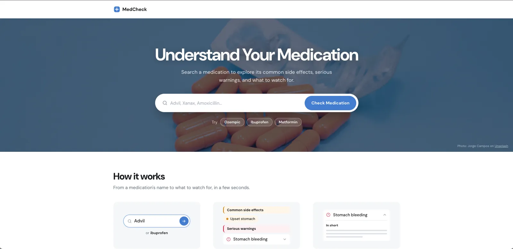
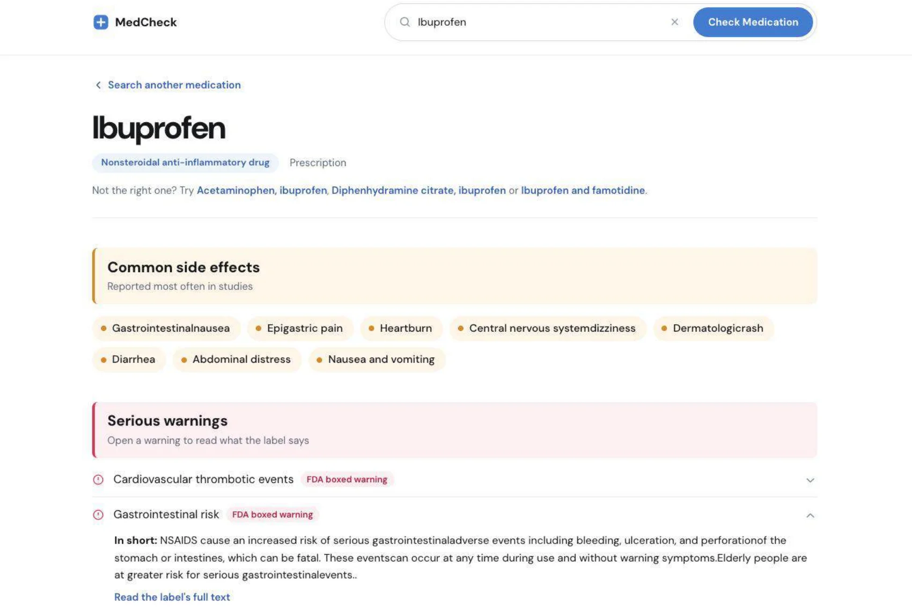
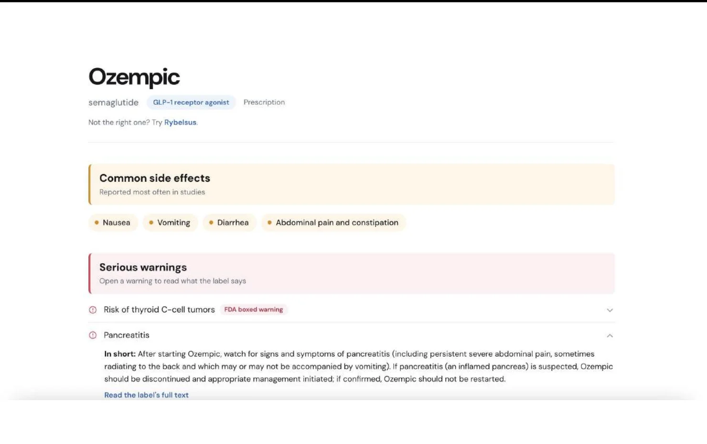
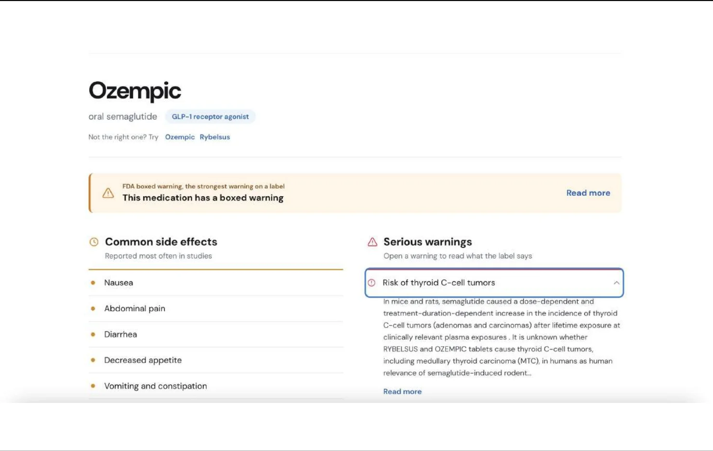
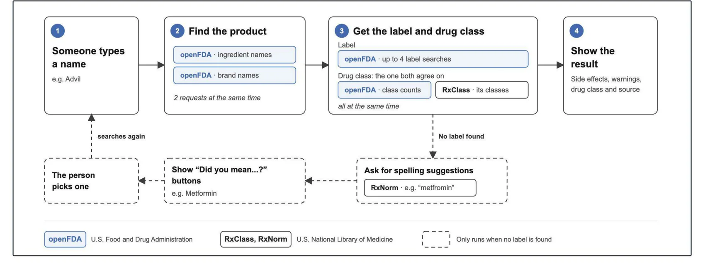
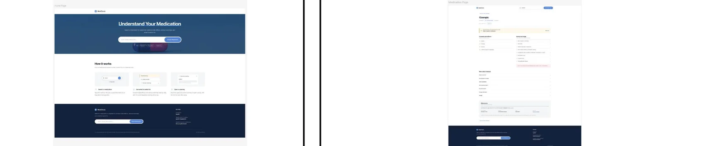
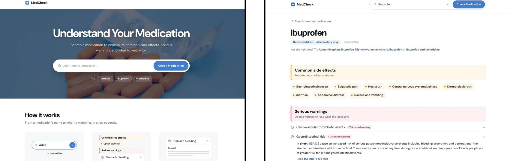

Making FDA drug labels easier to understand
so people know what to watch for with a new medication.

OVERVIEW
MedCheck is a medication checker for adults starting a new
prescription or over-the-counter medicine, and the caregivers who
help them. I designed and built it end to end, turning long,
technical FDA drug labels into a clear, scannable page that
answers one question: what should I watch for?
ROLELead UX Designer
TIMELINE6 weeks
TOOLSFigma, HTML, CSS, JavaScript, openFDA API
PROBLEM STATEMENT
Official drug labels contain everything a person needs to know,
but they’re long, dense and written for professionals. Someone
starting a new medication, often anxious and short on time, has
to dig through pages of text to find the side effects and
warnings that matter. How might we help people quickly find what
to watch for, without changing what the label says?
CONSTRAINTS
⏳ Working with messy label data
The FDA label data has no “common side effects” field. Each
section is one long block of text, worded differently by every
drug company, so early results were inconsistent: some
medications showed no side effects, no drug class, or even the
wrong product. The design had to work for every medication, not
just the one on my screen.
⚕️ Accuracy over simplicity
Health information can’t be oversimplified. I could make the
wording plainer, but not change the meaning, so every summary
comes from the label’s own text, the full label is one click
away, and the site is clear that it doesn’t replace advice
from a doctor or pharmacist.
RESULT
A one-page medication checker that puts what to watch for first
Instead of searching through a full label, people type a
medication name and see a short, structured page: common side
effects first, then serious warnings, with any FDA boxed warning
flagged at the top of that list. Longer details stay tucked into
rows that open on demand.
The result feels calm and trustworthy, with every answer traceable
back to the original label. I tested the finished site against 78
real medications to make sure the design held up beyond a single
example.
View the live site
·
View the source code

01
Search by brand or ingredient
People don’t always know the exact name on the box, so search
works with brand names or ingredients, with examples to try. If
the first match isn’t the right product, similar products are
suggested, and a misspelled name returns “Did you mean…?”
options instead of a dead end.

02
Understand the essentials
The page follows the order people would ask in: what is this
medication, which side effects are common, and what’s serious?
Common side effects appear in plain language, and each serious
warning has a short “In short” summary. Boxed warnings are
tagged in red, and longer details stay closed until opened.

03
Trust and transparency
In health, trust matters as much as clarity. Each result shows
the label date and manufacturer and links to the full label, so
the original text is one click away. A clear reminder says
MedCheck is educational and not a substitute for medical advice.
THE PROCESS
RESEARCH INSIGHTS
Learning from how medication information is shown today
To understand how medication information is shown today, I
reviewed leading health sites and the label data itself, looking
for what helps people find answers fast.
KEY INSIGHT #1
The label has the answers but no structure. Every section is a
long block of text, worded differently each time.
KEY INSIGHT #2
Strong sites rank information by importance. Drugs.com leads
with boxed warnings and Mayo Clinic sorts by urgency.
KEY INSIGHT #3
Long detail works best on demand. WebMD tucks it into tabs,
which keeps the first view short.
RESULT
Switching focus from showing the label to answering a question
The research changed how I framed the problem. People don’t want
a better-looking label, they want an answer to “what should I
watch for?” That shifted the design from reformatting the label
to structuring it around that question: common side effects
first, then serious warnings, with detail on demand.
It also changed what I left out. I tested openFDA’s adverse event
reports, but those are submitted reports, not how often a side
effect really happens, and they include entries like “drug
ineffective.” Showing them could mislead, so they never made it
into the design.
IDEATION
Finding the right amount of information
I explored three directions for the results page, judging each by
one question: does it help someone find what to watch for quickly,
without misleading them?
REACTIONS FIRST
A top-10 chart of reported reactions and a symptom checker gave
people everything at once. Too much to take in, and the chart
implied causes it couldn’t prove.
BOXED WARNING FIRST
Following Drugs.com, the boxed warning would lead the page. But
people want to know what’s common first, so I kept common side
effects on top and tagged boxed warnings in red.
ORDERED BY QUESTION
Common side effects first, then serious warnings with boxed
warnings tagged, then longer details, with the source last.
I chose the third direction because it matched how people think
when they start a medication, and made it the basis for my
wireframes.
USER FLOW
Designing for the moments that could go wrong
Mapping the experience end to end helped me design for the moments
where it could go wrong. A person types a medication name, the
product is found, and its label and drug class are retrieved. If
nothing is found, they’re offered spelling suggestions to pick
from, so they’re never left at a dead end.

THE DESIGN
WIREFRAMES
Starting with two key screens
I sketched two key screens in Figma: a home page and a medication
page. The home page is a single search bar over a dark photo,
inspired by Vrbo’s focused search. The medication page follows the
order people would ask in, ending with the source.

VISUAL DESIGN
Creating a calm and trustworthy reading experience
MedCheck’s style guide pairs a clean white background with
amber, red and blue accents to create a more approachable
experience for the user. Amber marks common side effects, red
marks serious warnings, and blue is used for links and buttons,
with navy anchoring the home page and footer. Using very few
cards groups the information, helps the user digest it
effectively, and lets the content lead.

KEY TAKEAWAYS
🧩 Designing for every case, not just one
Every label is written differently, so a fix that worked for one
medication could break another. I learned to design for the
full range of real data, and built a tester that checks 78
medications so I could trust the design beyond a single
example.
🔒 Clarity without changing the meaning
A summary that sounds right but changes the meaning is worse
than a long one. In health design, clarity can’t come at the
cost of accuracy, so every plain-language line traces back to
the label, with the full text one click away.
Thanks for reading
Want to see more? Take a look at my other projects.